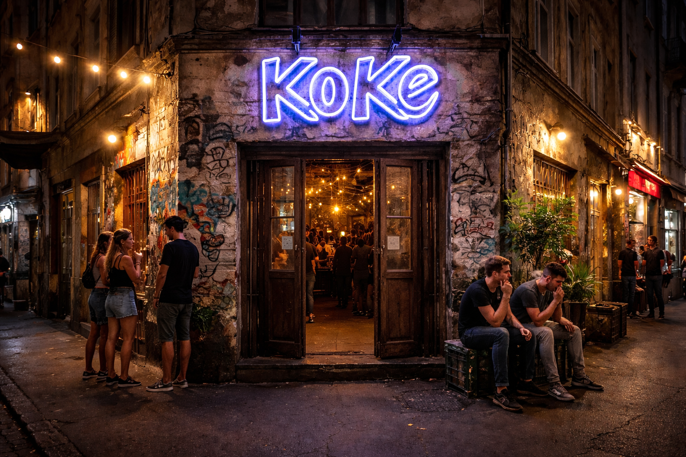

Helyszín
A város szívében, mégis távol a zajtól. A Koncert Kert Budapest egyik legizgalmasabb ipari környezetében vár titeket, ahol a romkocsma-hangulat találkozik a modern éjszakai élettel. Könnyen megközelíthető, mégis rejtett kincs a Duna-parthoz közel.
Budapest, Pázmány Péter stny. 1C, 1117

Nyitvatartás
Hétfő: ZÁRVA
Kedd: 15:00-00:00
Szerda: 15:00-00:00
Csütörtök: 15:00-02:00
Péntek: 15:00-02:00
Szombat: 15:00-02:00
Vasárnap: 15:00-00:00

Termeink
Nagyterem:
Befogadóképesség: 450 fő. A KoKe fő színpada: nagy koncertek, teltházas esték.
Kisterem:
Befogadóképesség: 120 fő. Alternatívabb, intimebb tér: friss zenekarok, felfedezések, klubhangulat. Közelebb vagy a színpadhoz, közelebb a zenéhez - nyers, közvetlen élmény.
Under Ground:
Befogadóképesség: Több, mint 200 fő. A Kert mélye: elektronika, kísérlet, éjszakai utazás. Tematikus esték (pl. Warehouse Night, Psy/Prog/Goa Night) és alter-elektronika.
Itallap
| SÖR | BOR/FRÖCCS | ||
|---|---|---|---|
| Csapolt lager 0,3l/ 0,5l | 850/ 1150 Ft | Ház bora 1dl/ 2dl (fehér/rosé) | 520/ 1090 Ft |
| Csapolt IPA 0,3l/ 0,5l | 990/ 1290 Ft | Kisfröccs (1dl bor + 1dl szóda) | 650 Ft |
| Búzasör 0,5l | 1290 Ft | Nagyfröccs (2 dl bor + 1dl szóda) | 1250 Ft |
| Alkoholmentes sör 0,5l | 1090 Ft | Hosszúlépés (1 dl bor + 2dl szóda) | 750 Ft |
| RÖVID (4cl) | Vice (2dl bor + 3dl szóda) | 1350 Ft | |
| Vodka | 1190 Ft | ALKOHOLMENTES | |
| Gin | 1290 Ft | Ásványvíz 0,5l | 490 Ft |
| Rum | 1290 Ft | Kóla / Zéró 0,33l | 590 Ft |
| Jaeger | 1190 Ft | Tonik 0,25l | 690 Ft |
| Unicum / keserű | 1190 Ft | Gyümölcslé 0,25l (narancs/barack/alma) | 650 Ft |
| Pálinka | 990 Ft | Házi limonádé 0,4l (citrom/bodza) | 990 Ft |
| KÁVÉ | RÁGCSA | ||
| Espresso | 590 Ft | Sós mogyi/ ropi | 590 Ft |
| Americano | 690 Ft | Hot Dog | 1290 Ft |
| Cappucino | 890 Ft | Krumpli + dip (ketchup/majonéz/mustár) | 1090 Ft |